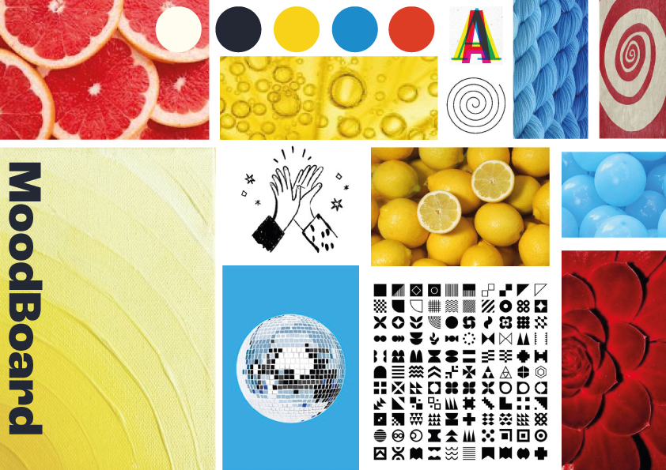
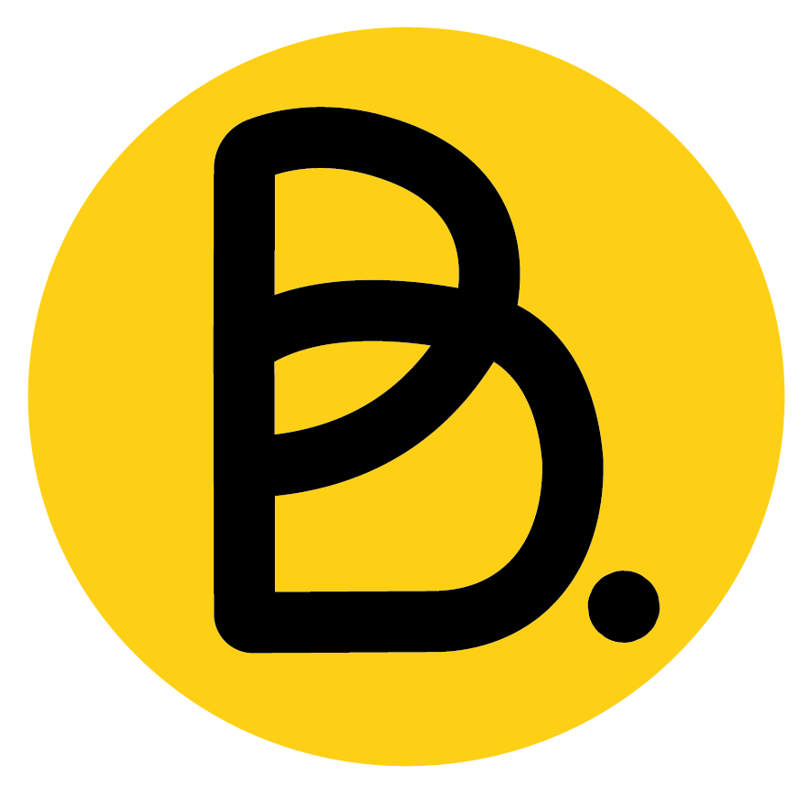

Production
Pour commencer, nous avons défini le nom et les valeurs associées à l’entreprise, tout en suivant le cahier des charges fourni par les professeurs.
Définition des valeurs et moodboard :
Nous avons choisi d’attribuer les valeurs de partage et de communauté. Cela nous tenait à cœur d’aider les étudiants dans leur quotidien, et les accompagner pour chaque étape de leur indépendance financière. Pour illustrer ces valeurs, j’ai produit un moodboard représentant nos inspirations visuelles.


Création du logo et de la charte graphique :
J’ai alors essayé d’exprimer ces valeurs à travers la création de notre logo, représentant le B de Banka avec un effet d’entrelacement, pour représenter la communauté créée sur la plateforme. De plus, le point associé permet de faire un clin d'œil au web, et donc à la banque en ligne. L’identité visuelle de Banka utilise davantage de pictogrammes, d’images d’illustrations et de dessins simplifiés pour donner un aspect “réseau social”.
Création de supports visuels variés :
Par la suite, j’ai développé son identité visuelle avec la création de supports visuels, tels que les goodies. Ainsi, l’identité visuelle de Banka s’est adaptée aux différents supports de diffusion : affiches, site web et application.

Mon rôle :
Quant à mon rôle précis dans ce projet, je me suis occupée de mettre en forme les valeurs, inspirations et de choisir les couleurs de la banque. J’ai également désigné le logo ainsi que les goodies, et enfin, je me suis occupée de la mise en page de la charte graphique.